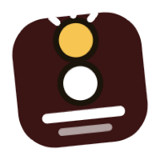

끊어치기
팁이 공에 닿는 순간 큐를 뒤로 끊고 있어요. 짧은 스트로크라면 길게 밀 필요는 없지만, 멈추기 전에 팁이 조금은 더 나가야 해요.
흔한 원인
- 너무 세게 칠까 봐 겁나요
- 어깨로 팔을 멈춰요
교정 방법
- 짧은 스트로크라도 팁을 공 너머로 몇 센티미터 더 내보내세요
- 임팩트 후에도 그립 손은 힘을 빼세요
- 피니시에서 멈추고 팁이 어디서 멈췄는지 확인하세요
추천 훈련

스톱샷TrueCue
TrueCue는 매 스트로크마다 이 습관이 나왔는지 알려줘요
곧 App Store에서 만나요 · 처음 50회 스트로크 무료 · 구독 또는 1회 구매